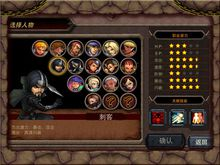

魔力战争
《魔力战争》是一款魔幻互动RPG网游，同时支持单机以及联网对战两种模式。游戏以一场惊天撼地的人魔大战为故事背景，玩家将扮演誓死捍卫家园，在对抗魔族的艰险历程中不断成长的人类勇士。游戏内容丰富精彩，足以让你享受超过200小时的游戏乐趣。
游戏给予玩家充分自由的养成空间，有8种职业、16个角色可供选择，并且允许随时转换。还有40种技能、500余种装备可以自由组合搭配、强化洗练；36张试炼地图以及上百种魔怪设定，每开启一场战斗，就是一次全新的挑战，极大地发挥了游戏的可玩性和自由度。
信息
中文名称：魔力战争 英文名称：Magical Battle
游戏版本：6.1
支持系统：iOS 8.0及以上
游戏语言：中文、英语
系统要求：与 iPad 兼容。需要 iOS 8.0 或更高版本
特色
1、在竞技场中挑战来自全球各地的玩家。
2、充分自由的游戏系统:9种职业,18个角色,40种技能,超过500种装备,任你自由选择。
3、你可以有千百种战略选择,但没有一种战略将是必胜的,只有你的机智决断能决定胜负。
4、自由度!不同的战略路线带来完全不同的游戏乐趣,你可以在游戏中随时转换游戏角色,以体验不同的玩法带来的乐趣。
5、超过200小时的游戏时间,45张试炼地图,100多种怪物和华丽的战斗动画。
6、庞大的佣兵市场为组队作战注入活力。
7、强大的装备强化系统/重置系统、技能重置系统。
8、极富挑战性的试炼之塔副本!不断挑战您的战斗极限!
9、版本持续更新,品质不断超越!
职业分析
圣骑士
职业分析：拥有最高HP成长潜力，第二的防御潜力，攻击和速度潜力最低。因此要发挥他血多防高优势。以下推荐两种人物培养方向：
1.反击型（防守反击型圣骑士）
因速度慢，所以不如以逸待劳在反击中消耗对手。 此类圣骑士需重置装备附加属性时选择：HP,防御，攻击这3类属性。让你的装备附加属性尽可能集中到这3类属性上。
推荐的搭配技能：能量盾，反击，反弹，反射，治疗，无敌，净化，反伤，加速，咆哮
2.消耗型（防守中依靠毒等技能消耗对手生命值的骑士）
同样需要高HP保全自身，然后使用各种消耗技能使对手在拉锯中落败。重置装备附加属性时选择：HP，防御，韧性，闪避
推荐的搭配技能：无敌，能量盾，反射，反弹，施毒，酒，火盾，诅咒，疾病，治疗，净化
法师
职业分析：最高攻击潜力，第二的SP潜力，速度和暴击潜力也不俗，HP和防御潜力最低。
1.攻击型
攻高血少，所以法师发挥攻击优势的同时要增强保命能力。这种类型的法师需要重置装备附加属性时，选择：攻击，破防，暴击，韧性这4类属性。建议所有的装备必须有破防属性，其他可以随意分配。
推荐的搭配技能：无敌，定时炸弹，冰冻，炸弹，嗜血，吸血，抽血，复活，反击。
2.消耗型
这种法师和圣骑士有所区别，主要消耗敌人SP。把敌人SP消耗净后，磨死敌人。疾病+能量破坏的组合极为强力，法师和牧师天生SP出色，再给敌人附加疾病效果后，使用能量破坏有双倍SP减少效果！这种类型的法师需要重置装备附加属性时，选择：SP，速度，闪避，韧性这4类属性。SP最好确保同时有：SP点数增加和SP百分比增加。
推荐的搭配技能：疾病，能量破坏，诅咒，施毒，酒，火盾，衰老攻击，无敌，幻影。
游侠
职业分析：有着最高速度潜力，第二闪避潜力，HP和防御潜力低。下面同样为您提供2种人物培养方向：
1.速闪型
利用高速和对手周旋，利用闪避保护自己，在拉锯战中消耗死对手。这种类型的游侠需要重置装备附加属性时，选择：速度，闪避，韧性这3类属性。尽可能的只提高这3类属性。
推荐的搭配技能：伤口恶化，主动护盾，复活，吸血，嗜血，重击，能量汲取，诅咒，施毒。
2.速攻型
利用高速和高攻击击杀敌人。这种类型的游侠需要重置装备附加属性时，选择：速度，破防，暴击这3类属性。尽可能的只提高这3类属性。
推荐的搭配技能：重击，闪电，落雷，定时炸弹，衰老攻击，减速，伤口恶化，主动护盾，复活。
狂战士
职业分析：最强暴击潜力，攻击和速度潜力也不赖，防御潜力低。下面只提供1种培养方向期待玩家挖掘更多玩法：
1.秒杀型
称秒杀型狂战士是因为狂战士22级，32级，42级三个级别6件套装集齐后可获超强破防属性。在重置装备附加属性时需确保装备有破防和暴击两种属性。并尽量保证其他另外两种属性是：攻击，速度，HP这3类。
推荐的搭配技能：嗜血，吸血，抽血，冰冻，爆弹，奋力一击，复活，暴虐。
牧师
职业分析：最高SP潜力，第3的防御和HP潜力，攻击和速度潜力低。圣骑士2种类型牧师都适用。再推荐一种消耗型牧师：
1.消耗型
同法师一样，高SP使牧师适合先清空对方SP再磨死对方战略。和消耗型法师相比，牧师攻击力低，但有更高生存力。这种类型的牧师需要重置装备附加属性时，选择：SP，防御，HP，韧性这4类属性。其中，SP最好确保同时有：SP点数增加，SP百分比增加这2条。
推荐的搭配技能：疾病，能量破坏，诅咒，施毒，酒，火盾，治疗，净化，无敌，反射。
刺客
职业分析：最高闪避潜力，第2的速度和暴击潜力，攻击数值波动大，增长最小攻击附加属性可让刺客攻击更稳。刺客HP和防御潜力低，不建议花精力。培养方式可参照游侠。

武僧
职业分析：最高防御潜力，第2的HP潜力，所有属性潜力都不低。所以，在保证防御的前提下，可尝试各种培养方向。
忍者
职业分析：忍者从精神到肉体都实现了飞越，获得了超越常人的战斗力、速度和应变能力。由于常年的隐忍苦修，使得忍者的生存能力远超常人，他们往往手持忍者十字镖，擅长消耗战，无论速度成长潜力还是闪避成长潜力均是第二，其他属性成长也不低。